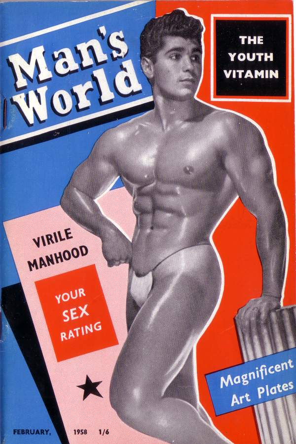

{kind=link}

"It became a bit of a mission to bring that history to life ..."
Rupert, congratulations on being shortlisted for the first Green Carnation Prize! We read a lot of great stuff, but we were all impressed at how Man’s World combines quite scathing satire with real tenderness and warmth for your characters. Was it difficult to write?
First of all, thanks for the recognition. It’s very hard to get new fiction noticed, and gay subject matter is a further handicap – there’s still a tendency among mainstream critics and lit eds to dismiss the work in a way that they would never do with, say, Black or Asian writers. So things like the Green Carnation Prize really help to get this stuff taken seriously.
Yes, Man’s World was difficult to write, and it had a very long gestation. Originally I thought I was going to write a story set entirely in the late 50s, early 60s, but I got so bogged down in the research and period detail that it was really flat. Eventually I realised that the point I was trying to make was how much things have changed for gay people in 50 years – so I introduced the contemporary narrative as a sort of counterpoint. That brought it to life and seems to have struck a chord with readers. The balance between satire and tenderness isn’t that hard – I mean, I really love my friends, but I’m not blind to their follies. Or mine.
A very exciting, surprising romance unfurls in the 1950s portions of the novel, but all the gay characters have a very harrowing time too. Do you look on that time differently, since your research for Man’s World?
It’s the most fascinating time in our history. I regard it as the crucible of the modern gay identity – that decade between the Wolfenden Report (1957) and the Sexual Offences Act (1967). It was a revolutionary time – far more exciting and relevant, as far as I’m concerned, than the American model of gay history that’s been imposed on us. The more things changed, the more the old guard fought back – it was a horrible time for many people, they were persecuted and imprisoned and driven to despair – but everyone knew that the change was coming and it was worth fighting for. The generation of gay people who are now in their 70s and 80s are my heroes and we should always be grateful to them.
Thanks for providing the image for today’s blog [see above]. An interesting contrast is made between the vogue for physique magazines – such as Health & Strength and Man’s World – and sex today: Robert gets a lot of sex but doesn’t enjoy much of it. Bearing in mind your success in the world of erotic fiction [writing as James Lear], do you think gay life has lost an erotic dimension in the last few decades?
God no. Gay life is just as sexy as it ever was. Obviously the repression of the 50s gives an amazing power to those expressions of gay desire that did manage to sneak through – and it seems terribly sexy to me, but that’s probably because I’m totally queer for the hairstyles and clothes of that period. When sex is absolutely all around you, when there are no barriers, you can become a bit jaded – ‘Oh look, another photo of an erect cock, yawn…’ – but that’s not to say that we’re any less sexually engaged now than we ever were. In terms of erotic fiction, you need tension and a sense of danger to make it exciting, so of course period stuff is ideal, that’s why all the Lear stuff is set in the past. But that’s fiction!
How did your founding of the House of Homosexual Culture influence your approach to Man’s World?
It was all part of the same journey. I’ve always been interested in gay history, of course, and eager to talk to older people who could tell a good yarn. The House of Homosexual Culture was an attempt to approach our history in a rather more public, formal way, and I met some amazing people whose stories inspired me on all sorts of levels; I’ve probably got enough material for half a dozen gay historical novels. The biggest influence was the realisation that a lot of young people knew next to nothing about their history. In 2007, the 40th anniversary of the Sexual Offences Act, we were doing events looking back at that period and a lot of the material seemed to be brand new to some of our audience. So it became a bit of a mission to bring that history to life in an accessible and entertaining way.
What would you nominate as a ‘lost Green Carnation’, a work by a gay male writer that deserves wider recognition?
There are so many! But in the context of this book, I’d like to mention a couple. One is The Heart in Exile by Rodney Garland, which is an incredible contemporary account of London gay life in the 50s. I was also hugely influenced by William Corlett’s brilliant Now and Then, although I don’t think that’s really a ‘lost’ book because a lot of people have read it.
What are you reading at the moment?
I’m reading Blake Bailey’s biography of John Cheever. I really love Cheever, he’s undoubtedly one of the great post-War American writers, but boy, I’m glad he wasn’t my father or husband! It’s a big book, but it’s very absorbing and it adds immensely to ones understanding of Cheever’s work.
As to the future, what are you working on at the moment?
Business as usual: I’ve got one novel that my agent is sending out to publishers as we speak, and I’m working on a brand new one. I write under different names for different markets, so I’m always busy – in 2010 I had three novels published! I don’t like to talk about projects in detail until the ink is dry on the contract so, basically, watch this space.
{kind=link}
More about the novel…
Man’s World
A novel by Rupert Smith
Published by Arcadia
Tag-line: ‘A Historical Romance – With A Difference’
What they say
‘Funny, dirty, deeply romantic, Man’s World is a wonderfully evocative novel that hurtles between now and our recent history in a wild and emotional waltzer ride’ – Jake Arnott
What’s it about?
Robert’s got a great job, amazing pecs and a terrific sex life. The day he moves into his new flat, he and his friend Jonathan see one of his new neighbours coming out, ‘a shape on a stretcher’. That neighbour, and his lover, their lives and their world, unfold for the reader in a narrative parallel to Robert’s. But soon that double narrative is entwined…
Opening lines:
Jonathan was supposed to meet me at nine o’clock this morning, but he turns up at eleven with some story about how he went out with his yoga teacher last night and they ended up getting drunk in Soho and going back to the yoga teacher’s house, where Jonathan spent the night, and now of course he is being quite coy about what if anything actually happened. I’ve said all along that the only reason he got into yoga is so he can keep his legs in the air for extended periods of time.
You can buy Man’s World here at Amazon.co.uk, and Rupert’s website is here: http://www.rupertsmith.org.uk/